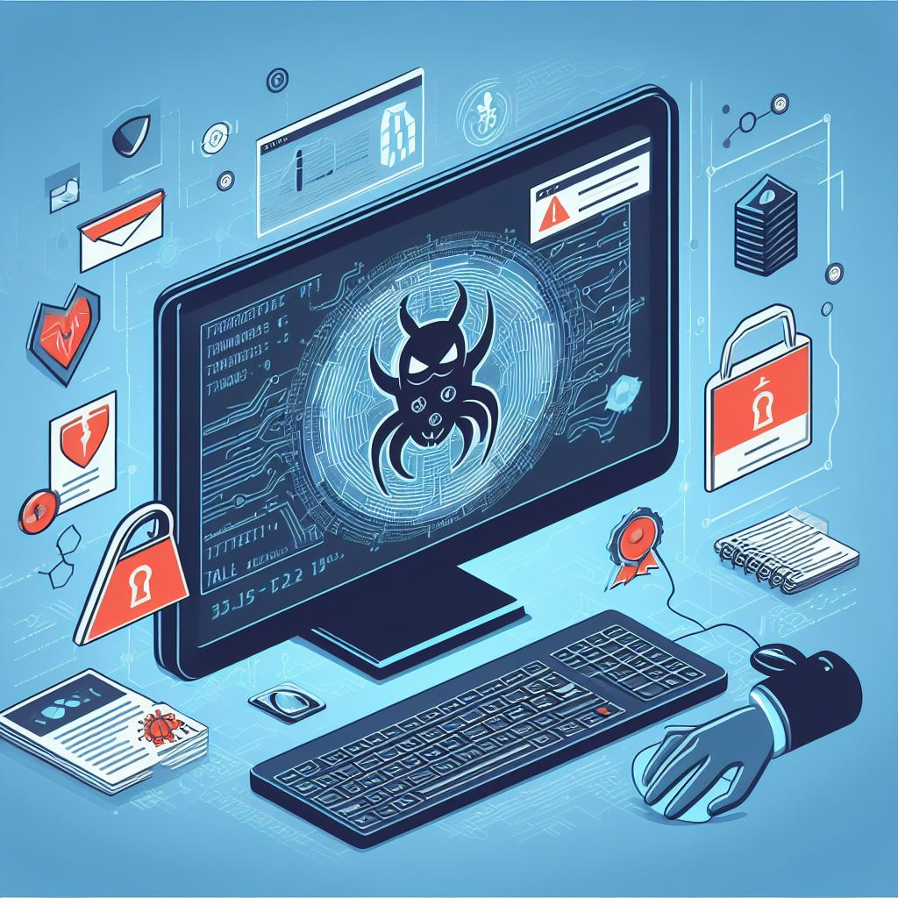

Dziś chciałbym porozmawiać z wami na temat zagadnienia, które zyskuje
coraz większe znaczenie w świecie cyfrowym: Malware. Malware to skrót od
"Malicious software" i obejmuje różne rodzaje szkodliwego oprogramowania zaprojektowanego do
wyrządzania szkód na komputerach lub sieciach.
1. Wirus
Wirus to rodzaj malware'u, który przyczepia się do istniejących
programów lub plików i reprodukuje się, osadzając się w innych plikach.
Wirusy często rozprzestrzeniają się poprzez zainfekowane pliki,
załączniki do e-maili lub zainfekowane strony internetowe. Mogą
uszkadzać lub niszczyć dane oraz pogarszać wydajność komputera.

2. Trojan:
Trojan to zamaskowany malware, który udaje, że jest użytecznym
oprogramowaniem, aby uzyskać dostęp do systemu. W przeciwieństwie do
wirusów, trojany nie mogą się replikować, ale wymagają interakcji
użytkownika, aby zostać zainstalowanym. Po aktywacji mogą kraść poufne
informacje, otwierać tylnie drzwi dla atakujących lub przeprowadzać inne
szkodliwe działania.
3. Robaki:
W odróżnieniu od wirusów, robaki rozprzestrzeniają się samodzielnie, bez
interwencji człowieka. Często wykorzystują luki w zabezpieczeniach sieci
do rozprzestrzeniania się. Robaki mogą szybko się rozprzestrzeniać i
wyrządzać znaczne szkody, przeciążając zasoby sieciowe lub kradnąc
poufne informacje.
Aby się chronić przed tymi zagrożeniami, ważne jest podniesienie
świadomości bezpieczeństwa i podjęcie odpowiednich środków ochronnych.
Regularne aktualizacje, programy antywirusowe i unikanie niebezpiecznych
stron internetowych oraz załączników do e-maili to podstawowe praktyki
minimalizowania ryzyka malware'u.
W coraz bardziej skomputeryzowanym świecie zrozumienie malware'u i
wdrożenie środków bezpieczeństwa są niezbędne do ochrony naszych działań
cyfrowych.
Te ataki hakerów są kluczowe dla programistów!
1. SQL-Injection:
SQL-Injection to technika ataku, w której atakujący wstrzykuje szkodliwe
polecenia SQL do aplikacji, często poprzez manipulowane dane wejściowe
użytkownika. Pozwala to atakującemu uzyskać dostęp do poufnych treści
bazy danych.
2. Cross-Site Scripting (XSS):
XSS występuje, gdy atakujący wstawia złośliwy kod do strony
internetowej, który następnie jest wykonywany w przeglądarce
użytkownika. Pozwala to atakującemu kraść dane użytkownika lub
przejmować sesje.
3. Denial of Service (DoS) i Distributed Denial of Service (DDoS):
DoS i DDoS mają na celu przeciążenie zasobów serwera, aby uniemożliwić
korzystanie z usługi dla legalnych użytkowników.
Nie jest również zakazane obejrzenie poradnika na YouTube, na przykład o
XSS.